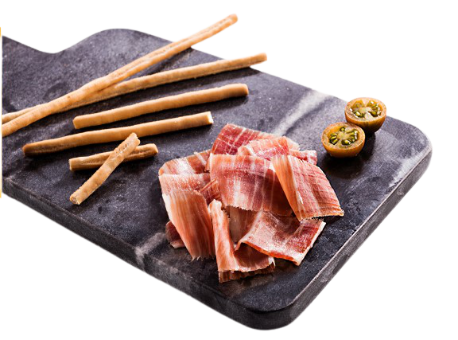

NUESTROS PRINCIPIOS
El orgullo por el trabajo bien hecho. Esta es la filosofía que da vida a la familia Martín, la cría de los mejores ejemplares de cerdo ibérico, creando sus productos exclusivamente según métodos tradicionales y manteniendo tiempos de maduración precisos, y un control experto y constante en todas las etapas de producción.
